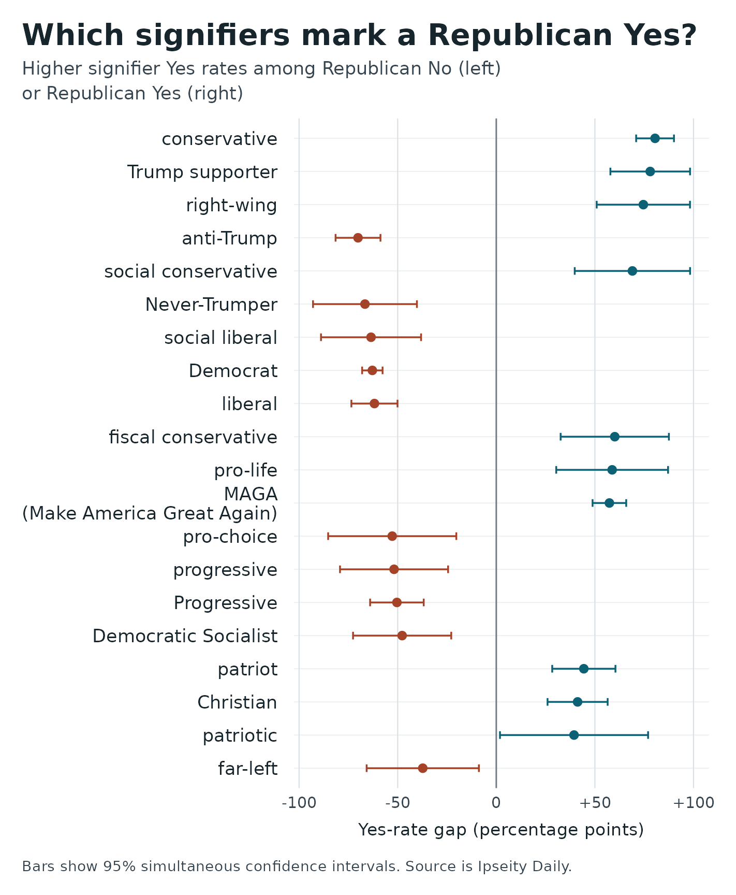

A daily study of the self
The 20 signifiers most diagnostic of a Republican Yes or No

In the Ipseity Daily survey, conservative was the self-description that best distinguished Yes from No on the question of whether Republican described someone that day. After comparing people surveyed on the same dates, 92.0% of the Republican Yes group endorsed conservative, compared with 11.5% of the Republican No group. The rest of the ranking shows how party identity lines up with attitudes toward Donald Trump, abortion labels, and broader words such as Christian and patriot.
The 20 largest gaps
The ranking uses the size of the difference in Yes rates, in percentage points. Positive gaps indicate a higher Yes rate among Republican Yes respondents. Negative gaps indicate a higher rate among Republican No respondents.
- conservative (+80.5)
- Trump supporter (+78.1)
- right-wing (+74.6)
- anti-Trump (−70.1)
- social conservative (+69.0)
- Never-Trumper (−66.6)
- social liberal (−63.5)
- Democrat (−62.8)
- liberal (−61.8)
- fiscal conservative (+60.1)
- pro-life (+58.8)
- MAGA (Make America Great Again) (+57.4)
- pro-choice (−52.8)
- progressive (−51.8)
- Progressive (−50.4)
- Democratic Socialist (−47.7)
- patriot (+44.4)
- Christian (+41.2)
- patriotic (+39.4)
- far-left (−37.3)
The figure shows the gaps as dots, with bars for 95% confidence intervals adjusted for looking across all 640 eligible signifiers. All 20 bars lie to one side of zero, and many overlap other bars on the same side. The exact order is uncertain, especially for items with wider bars. The survey recorded progressive and Progressive as separate items. Their similar gaps show the same theme in the responses to both versions.
What the labels can tell us
The political terms cover several ways people place themselves. Conservative and liberal are broad descriptions. Social conservative and fiscal conservative point to more specific aspects of politics that respondents may care about. Democrat was much more common among people who answered Republican No, with a Yes rate of 64.2% in that group. That leaves room among Republican No answers for other political identities and for people who seldom use party labels.
Trump-related terms are prominent in both directions. Trump supporter, anti-Trump, and Never-Trumper show how strongly answers about the party line up with labels about a political figure. MAGA was endorsed by 60.4% of the Republican Yes group and 3.1% of the Republican No group. Its gap was large partly because so few people in the No group adopted the movement label. The Republican Yes group included many who answered No to MAGA.
The abortion labels show a similar mix of separation and overlap. Pro-life was more common among people who answered Republican Yes, and pro-choice was more common among those who answered Republican No. Even so, the same-day Yes rate for pro-choice was 37.3% among people who answered Republican Yes on the dates used for that item. These are answers about whether a term describes someone. The policy views they associate with either term could vary.
The presence of patriot, Christian, and patriotic suggests that the language of party identity in this sample extends into religion and national attachment. Those self-descriptions were also common among people who answered Republican No. In that group 37.5% said Yes to Christian and 41.7% said Yes to patriotic after aligning survey dates for each item. The gaps tell us something about who chose those words. What people mean by patriotism, or how they practice a faith, is a separate question.
Who was compared
Ipseity Daily asks surveyed American adults whether a word or phrase describes them that day. The snapshot through November 25, 2026, contained 802,772 signifier answers. The Republican item was answered on 10,031 respondent-days by 5,379 respondents. A respondent-day represents one person on one survey date. The 20 comparisons shown here used 26,380 other answers across 10,025 respondent-days from 5,376 respondents.
Each comparison used answers from people who answered both items on the same day. It used dates with these paired answers in both Republican answer groups. To qualify for ranking, a signifier needed at least 50 answers from at least 20 people in each group. Dates with more answers and better balance between the groups counted more. The uncertainty estimates accounted for repeat participation. Across survey dates, 65 respondents gave both answers to the Republican item, a reminder that the question asks about self-description that day.
Signifier sets vary, so the people answering one item may differ from those answering another. The analysis included valid answers regardless of whether demographics were available. Differences in the groups’ demographic makeup could contribute to the gaps. The associations describe the people and questions surveyed, and leave open how these identities develop or how the gaps would look in a representative U.S. sample.
Read the complete R analysis
#!/usr/bin/env Rscript
suppressPackageStartupMessages(library(tidyverse))
data_path <- Sys.getenv("IPSEITY_DATA_PATH", "data/ipseity.csv.gz")
expected_columns <- c(
"endorsed", "signifier", "observation_date", "hashed_respondent_id",
"demographics_status", "age", "sex", "ethnicity", "birth_country",
"residence_country", "nationality", "language", "student", "employment",
"time_on_task", "approvals"
)
responses <- read_csv(
data_path,
col_types = cols(
.default = col_character(),
endorsed = col_integer(),
observation_date = col_date(),
age = col_double()
),
trim_ws = FALSE,
progress = FALSE
)
response_key <- c("hashed_respondent_id", "observation_date", "signifier")
demographic_columns <- expected_columns[6:14]
revoked <- responses$demographics_status %in% "consent_revoked"
stopifnot(
identical(names(responses), expected_columns),
nrow(problems(responses)) == 0L,
all(responses$endorsed %in% c(0L, 1L)),
!anyNA(responses$observation_date),
!anyNA(responses$signifier),
all(nzchar(str_trim(responses$signifier))),
!anyNA(responses$hashed_respondent_id),
all(str_detect(responses$hashed_respondent_id, "^[0-9a-f]{12}$")),
all(responses$demographics_status %in% c("available", "consent_revoked", "data_expired")),
all(is.na(responses[revoked, demographic_columns])),
anyDuplicated(responses[response_key]) == 0L
)
target_label <- "Republican"
minimum_days_per_group <- 50L
minimum_respondents_per_group <- 20L
number_to_report <- 20L
family_confidence <- 0.95
day_key <- c("hashed_respondent_id", "observation_date")
target <- responses |>
filter(signifier == target_label) |>
select(all_of(day_key), republican = endorsed)
stopifnot(n_distinct(target$republican) == 2L)
paired <- responses |>
filter(signifier != target_label) |>
select(all_of(response_key), endorsed) |>
inner_join(target, by = day_key, relationship = "many-to-one")
# Use each completed candidate answer on a day that also has a Republican
# answer from that respondent. Within a candidate, use dates represented
# in both Republican answer groups.
overlap <- paired |>
group_by(signifier, observation_date) |>
mutate(
republican_share = mean(republican),
republican_centered = republican - republican_share,
endorsement_centered = endorsed - mean(endorsed)
) |>
ungroup() |>
filter(republican_share > 0, republican_share < 1)
eligible <- overlap |>
group_by(signifier) |>
summarise(
yes_days = sum(republican == 1L),
no_days = sum(republican == 0L),
yes_respondents = n_distinct(hashed_respondent_id[republican == 1L]),
no_respondents = n_distinct(hashed_respondent_id[republican == 0L]),
.groups = "drop"
) |>
filter(
yes_days >= minimum_days_per_group,
no_days >= minimum_days_per_group,
yes_respondents >= minimum_respondents_per_group,
no_respondents >= minimum_respondents_per_group
)
stopifnot(nrow(eligible) >= number_to_report)
analysis_rows <- overlap |>
semi_join(eligible, by = "signifier")
# Centering within date gives the date fixed-effects regression coefficient.
# The two rates use the same date weights, n_yes * n_no / (n_yes + n_no).
estimates <- analysis_rows |>
group_by(signifier) |>
summarise(
observations = n(),
dates = n_distinct(observation_date),
respondents = n_distinct(hashed_respondent_id),
information = sum(republican_centered^2),
yes_rate = sum(republican_centered * endorsed * republican) / information,
no_rate = -sum(republican_centered * endorsed * (1L - republican)) / information,
gap = yes_rate - no_rate,
.groups = "drop"
)
# Sum score contributions within respondent to allow dependence across days.
cluster_variance <- analysis_rows |>
inner_join(select(estimates, signifier, gap), by = "signifier", relationship = "many-to-one") |>
mutate(residual = endorsement_centered - gap * republican_centered) |>
group_by(signifier, hashed_respondent_id) |>
summarise(score = sum(republican_centered * residual), .groups = "drop") |>
group_by(signifier) |>
summarise(score_squares = sum(score^2), .groups = "drop")
tail_probability <- (1 - family_confidence) / (2 * nrow(eligible))
ranked <- estimates |>
inner_join(cluster_variance, by = "signifier", relationship = "one-to-one") |>
inner_join(eligible, by = "signifier", relationship = "one-to-one") |>
mutate(
# Both the date intercepts and the Republican coefficient consume degrees of freedom.
correction = (respondents / (respondents - 1L)) *
((observations - 1L) / (observations - dates - 1L)),
standard_error = sqrt(correction * score_squares) / information,
margin = qt(1 - tail_probability, df = respondents - 1L) * standard_error,
lower = gap - margin,
upper = gap + margin
) |>
arrange(desc(abs(gap)), signifier, .locale = "C")
stopifnot(all(is.finite(ranked$lower)), all(is.finite(ranked$upper)))
reported <- ranked |>
slice_head(n = number_to_report) |>
mutate(rank = row_number())
# Screen the public labels before placing them in a figure or results file.
unsafe_label <- "@|https?://|[[:cntrl:]]|\\b[0-9a-fA-F]{12}\\b"
stopifnot(!any(str_detect(reported$signifier, unsafe_label)))
count_days <- function(rows) {
nrow(distinct(rows, across(all_of(day_key))))
}
summarize_coverage <- function(label, rows) {
sprintf(
"%s: %d response observations; %d respondent-days; %d unique respondents; %d dates",
label, nrow(rows), count_days(rows), n_distinct(rows$hashed_respondent_id),
n_distinct(rows$observation_date)
)
}
target_yes <- filter(target, republican == 1L)
target_no <- filter(target, republican == 0L)
reported_rows <- filter(analysis_rows, signifier %in% reported$signifier)
results <- c(
"Republican Yes versus No | Ipseity Daily",
sprintf(
"Snapshot dates: %s through %s",
min(responses$observation_date), max(responses$observation_date)
),
summarize_coverage("Full snapshot", responses),
sprintf("Signifiers in full snapshot: %d", n_distinct(responses$signifier)),
summarize_coverage("Republican answers", target),
summarize_coverage("Republican Yes answers", target_yes),
summarize_coverage("Republican No answers", target_no),
sprintf(
"Unique respondents answering Republican both ways on different dates: %d",
length(intersect(target_yes$hashed_respondent_id, target_no$hashed_respondent_id))
),
summarize_coverage("Other answers paired with Republican", paired),
sprintf("Other signifiers paired with Republican: %d", n_distinct(paired$signifier)),
sprintf(
"Eligibility minimums in each Republican answer group: %d answers and %d unique respondents",
minimum_days_per_group, minimum_respondents_per_group
),
sprintf("Signifiers eligible after requiring both groups on each included date: %d", nrow(eligible)),
summarize_coverage("Answers used across eligible signifiers", analysis_rows),
summarize_coverage("Answers used across reported signifiers", reported_rows),
sprintf("Number of signifiers reported: %d", number_to_report),
sprintf("Familywise confidence level: %.0f%% (Bonferroni across %d signifiers)", 100 * family_confidence, nrow(eligible)),
sprintf("Reported intervals excluding zero: %d of %d", sum(reported$lower > 0 | reported$upper < 0), nrow(reported)),
sprintf("Reported gaps above zero: %d of %d", sum(reported$gap > 0), nrow(reported)),
sprintf(
"Range of response observations per reported signifier: %d to %d",
min(reported$observations), max(reported$observations)
),
"",
"Ranks use the absolute day-adjusted Yes-rate gap. Rates are percentages.",
"Gap and confidence limits are in percentage points (Republican Yes minus Republican No).",
"Per-signifier group response counts are also the corresponding group respondent-day counts.",
paste(
c(
"rank", "signifier", "republican_yes_rate_pct", "republican_no_rate_pct",
"gap_pp", "lower_pp", "upper_pp", "dates", "response_observations",
"unique_respondents", "republican_yes_responses", "republican_no_responses",
"republican_yes_unique_respondents", "republican_no_unique_respondents"
),
collapse = "\t"
),
with(
reported,
sprintf(
"%d\t%s\t%.1f\t%.1f\t%+.1f\t%+.1f\t%+.1f\t%d\t%d\t%d\t%d\t%d\t%d\t%d",
rank, signifier, 100 * yes_rate, 100 * no_rate, 100 * gap, 100 * lower,
100 * upper, dates, observations, respondents, yes_days, no_days,
yes_respondents, no_respondents
)
)
)
writeLines(results, "results.txt", useBytes = TRUE)
plot_data <- reported |>
mutate(
item = factor(signifier, levels = rev(signifier)),
direction = if_else(gap > 0, "Higher among Republican Yes", "Higher among Republican No")
)
figure <- ggplot(plot_data, aes(x = 100 * gap, y = item, colour = direction)) +
geom_vline(xintercept = 0, linewidth = 0.55, colour = "#737B83") +
geom_errorbar(
aes(xmin = 100 * lower, xmax = 100 * upper),
width = 0.23, linewidth = 0.65, orientation = "y"
) +
geom_point(size = 2.8) +
scale_colour_manual(
values = c(
"Higher among Republican Yes" = "#0C6174",
"Higher among Republican No" = "#A44328"
),
guide = "none"
) +
scale_x_continuous(
breaks = seq(-100, 100, by = 50),
labels = function(value) if_else(value > 0, paste0("+", value), as.character(value))
) +
scale_y_discrete(
labels = function(label) str_replace(label, fixed("MAGA ("), "MAGA\n("),
expand = expansion(add = c(0.6, 0.6))
) +
labs(
title = "Which signifiers mark a Republican Yes?",
subtitle = paste(
"Higher signifier Yes rates among Republican No (left)",
"or Republican Yes (right)",
sep = "\n"
),
x = "Yes-rate gap (percentage points)",
y = NULL,
caption = sprintf(
"Bars show %.0f%% simultaneous confidence intervals. Source is Ipseity Daily.",
100 * family_confidence
)
) +
theme_minimal(base_size = 15, base_family = "sans") +
theme(
plot.title.position = "plot",
plot.caption.position = "plot",
plot.title = element_text(face = "bold", size = 23, colour = "#17252D"),
plot.subtitle = element_text(size = 14, colour = "#36454F", lineheight = 1.15, margin = margin(b = 12)),
axis.text.y = element_text(size = 14, colour = "#17252D", lineheight = 0.88, margin = margin(r = 9)),
axis.text.x = element_text(size = 12, colour = "#36454F"),
axis.title.x = element_text(size = 13.5, colour = "#17252D", margin = margin(t = 9)),
panel.grid.major.x = element_line(colour = "#DAE0E4", linewidth = 0.42),
panel.grid.major.y = element_line(colour = "#EBEEF0", linewidth = 0.34),
panel.grid.minor = element_blank(),
plot.caption = element_text(hjust = 0, size = 11.5, colour = "#36454F", margin = margin(t = 17)),
plot.margin = margin(18, 21, 16, 17)
)
ggsave(
"visualization.png", plot = figure, width = 7.9, height = 9.6, dpi = 180,
bg = "white"
)
Original research prompt
Report the 20 signifiers that are most diagnostic of a Republican Yes versus No. Discuss the potential meaning more than methodology.
Dataset SHA-256: d3615e0efa5a0ecbe2dbca6f2f713b29b20655278f05a04160fafc6b097228f6